Estrutura dos Produtos sem custo antecipado
Nota
Para uma melhor visualização das imagens, abra-as em outra guia.
‘PA_Nivel-01_001’ consome ‘SA_Nivel-02_001’ que consome ‘item nenhum’.
{kind=link}
‘PA_Nivel-01_002’ consome ‘SA_Nivel-02_001’ que consome ‘item nenhum’.
{kind=link}
‘PA_Nivel-01_003’ consome ‘SA_Nivel-02_001’ que consome ‘item nenhum’.
{kind=link}
Agora, vamos analisar as movimentações apenas do item ‘SA_Nivel-02_001’, para isso devemos entrar no cadastro do item e abrir o ‘Relatório de verificação do estoque’:
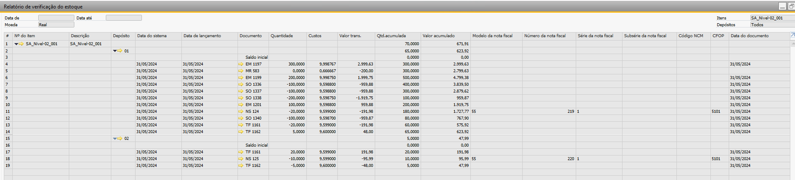{kind=link}
Portanto, ao analisar as movimentações dentro do mês de maio/24, observamos que houve uma produção do item de 500 peças, devido às entradas de mercadorias vinculadas nas OPs (EM 1197, EM 1199) e uma entrada proveniente de um estorno de produção (EM 1201).
Observa-se também que o custo do item foi reavaliado em “-200,00” (MR 583) e que houve consumo do item através das saídas de mercadorias (‘SO 1336’, ‘SO 1337’, ‘SO 1338’).
Ainda dentro do mês houve duas vendas totalizando 30 peças (‘NS 124’ e ‘NS 125’) e duas transferências de estoque (‘TF 1161’ e ‘TF 1162’).
Com as informações dispostas da tela do relatório acima, é possível realizar manualmente a memória de cálculo para o item e por assim, validar se os valores considerados no fechamento estão corretos.
Segue abaixo exemplo de memória de cálculo para o item ‘SA_Nivel-02_001’:
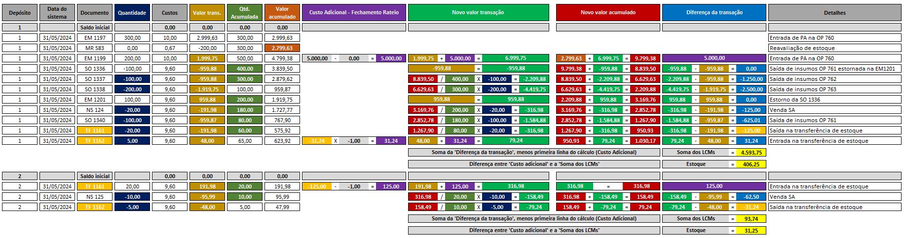{kind=link}
Logo para o item ‘SA_Nivel-02_001’ o fechamento de custo irá observar:
As movimentações que incluem produções, reavaliações, vendas e transferências.
O custo final por unidade, que reflete a produção, custos adicionais e ajustes de reavaliação.
Para o nosso exemplo foi cadastrado um GGF com rateio de ‘Horas máquina’ e um valor de 5.000,00:
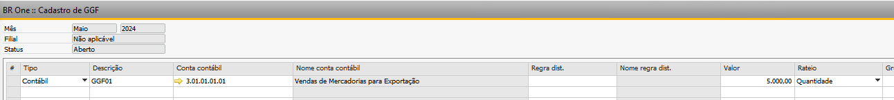{kind=link}
Portanto, ao simular o fechamento do mês, temos o seguinte retorno:
Aba ‘Resultado”:
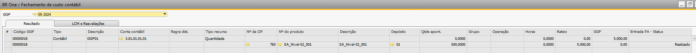{kind=link}
Aba ‘LCM e reavaliações’:
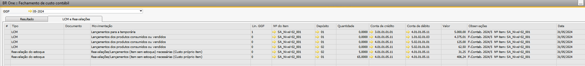{kind=link}
Ao analisar a simulação do fechamento de custo, vemos na aba ‘Resultado’ que foi rateado um valor de 5.000,00 para o item ‘SA_Nivel-02_001’ na OP 760:
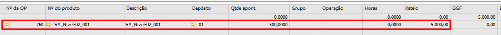{kind=link}
Portanto ao verificarmos os lançamentos da aba ‘LCM e Reavaliações’, temos na primeira linha o lançamento da temporária, que pega o valor do cadastro do GGF e faz um débito na ‘Conta de alocação temporária de custos’ (alocação), que é configurada na aba ‘Custos’ da tela ‘Configurações de produção’:
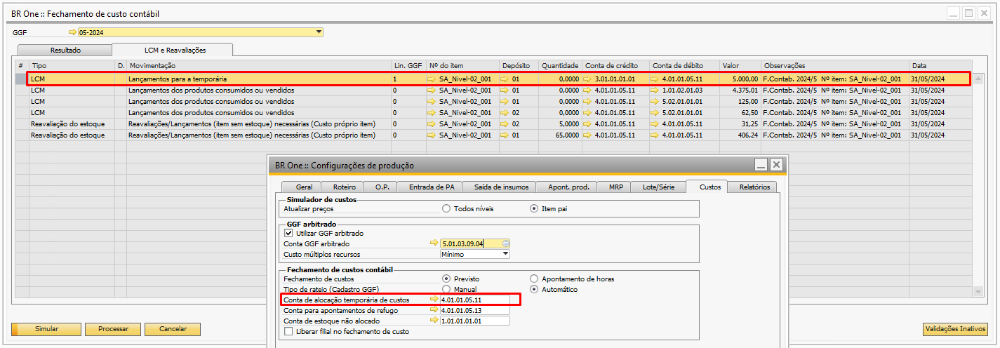{kind=link}
Na segunda linha do fechamento é realizado um débito na conta de WIP do depósito 01, este lançamento ocorre, pois, houve consumo do item ‘SA _Nivel-02_001’ no depósito 01 dentro do mês do fechamento (‘SO 1336’, ‘SO 1337’, ‘SO 1338’):
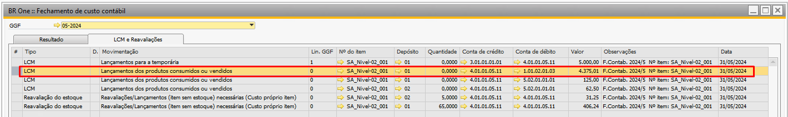{kind=link}
Comparando com a memória de cálculo realizada, podemos ver que são os mesmos valores, logo, o valor rateado no fechamento de custo está correto:
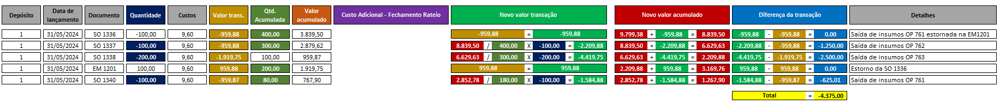{kind=link}
Obs.: Os valores na memória de cálculo ficam negativos, pois no relatório de verificação de estoque, ele indica a saída desse montante do depósito (conta: 4.01.01.05.11).
Na terceira e quarta linha do fechamento temos dois lançamentos, um para o depósito 01 e outro para o depósito 02, onde é feito um débito para a conta de CPV, esse lançamento é referente a venda realizada do ‘SA _Nivel-02_001’ dentro do período de fechamento (NS 124 e NS 125):
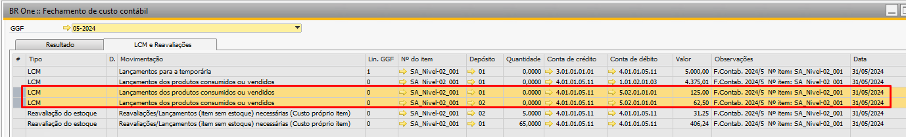{kind=link}
Se compararmos os valores levados no fechamento de custo para o item com a memória de cálculo acima, podemos verificar que, os valores levados para a CPV nos dois depósitos são iguais ao rateados no fechamento, logo o rateio no fechamento também está correto.
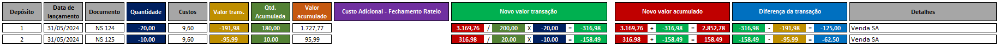{kind=link}
Obs.: Os valores na memória de cálculo ficam negativos, pois no relatório de verificação de estoque, ele indica a saída desse montante do depósito (conta: 4.01.01.05.11).
Para a quinta e sexta linha, foram realizadas duas reavaliações referentes às quantidades disponíveis em estoque no último dia do mês do item ‘SA_Nivel-02_001’ para os depósitos 01 e 02:
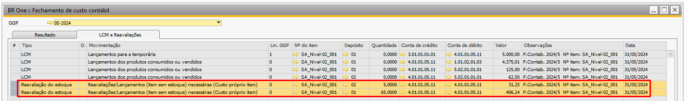{kind=link}
Realizando o cálculo da diferença entre o custo adicional e a soma dos LCMs, temos os valores das reavaliações de estoque realizados pelo fechamento de custo, respectivamente, para os depósitos 01 e 02:
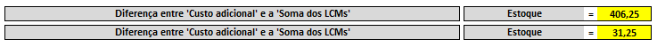{kind=link}